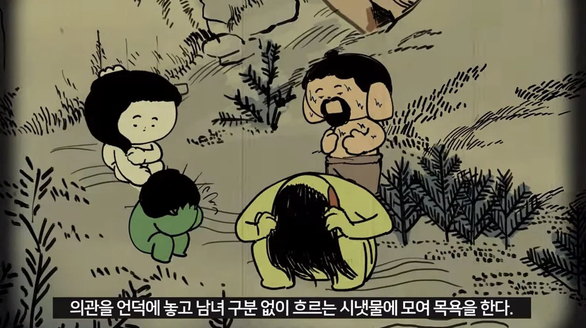

목욕에 진심이었던 고려인들
댓글
ㅇㅇ
그 만두ㅋㅋㅋㅋㅋ
물은 많은데 한반도에 인구가 500만정도라서 수자원이 넘치던 시절이었지
구한말되면 인구가 2천만명까지 늘어나서 도시사람들은
매일 씻기 힘들었음
현재는 한반도 인구 7500만명
뭔소린가
한국인구는 5천만따리인데
한반도라고 써놓은거 안보임? 술드심?
아 북한포함이었어?
난 또
와 옆집누나랑 아침에 샤워
중국 유럽은 흑사병에 털렸는데 고려는 넘어간 이유
잘씻는다.
쥐 종류가 다르다.
쥐의 서식지가 초가지붕 인데 구렁이가 룸메.
여대생이랑 목욕하고싶다
맞음 지식지상주의 표절했다가 욕먹었지